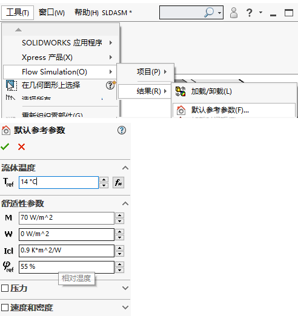

Simulation-Flow-HVAC
SOLIDWORKS Flow Simulation中的 HVAC 模块可让您预测和优化生活环境中的温度控制和气流。
环境控制的有效性是通过人体舒适度参数来衡量的。这些参数在设计占用空间及其 HVAC 系统时使用，有助于确定环境条件在一般热舒适度或不舒适度以及质量方面是否可接受。
PPD
预测不满意百分比(PPD)–提供热不适或热不满意信息的指数。
吃风率——预计会受到吃风困扰的人数百分比。
平均辐射温度(MRT)
工作温度
通风温度——占用区域中任意点与控制条件之间的温度差。
PMV
PMV 的计算考虑了代谢率、服装热阻、外部功、服装表面温度、空气温度和其他一些参数。您可以在“默认参考参数”中设置。
ADPI
空气扩散性能指数（ADPI）
污染物去除效果（CRE）和当地空气质量指数（LAQI）用于评估通风系统去除污染空气的有效性。为了允许计算舒适度参数，您必须启用计算控制选项中相应的复选框选项，如下图所示。
预测不满意百分比(PPD) 和预测平均投票 (PMV) 是两个主要的舒适度参数，可确定问题区域在占用空间中的位置，使您可以在构建冷却系统之前解决这些问题。
参考
【图片】SOLIDWORKS Flow Simulation 中的舒适参数是什么【卓盛信息solidworks吧】_百度贴吧